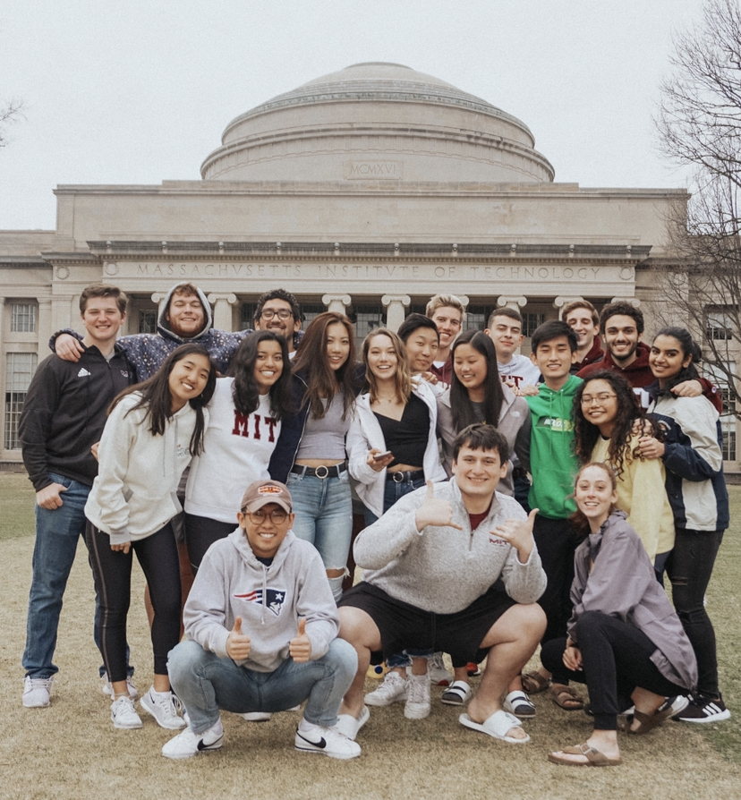

Hi! I'm
Nina Wang.

I'm a current senior at MIT studying Computer Science & Economics, and Business Analytics.
I'm a current senior at MIT studying Computer Science & Economics, and Business Analytics.
Education
